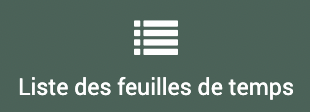
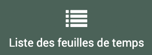
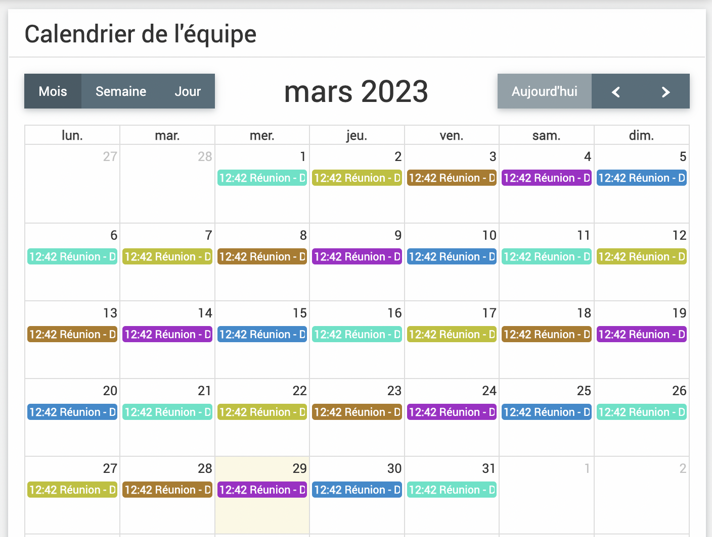

Paramétrages simples
Accueil
Création des blocs
Dans  > , on peut paramétrer l’écran d’accueil qui est l’écran qui s’affiche en premier par défaut lros de la connexion à EVA. Il est aussi accessible via le bouton .
> , on peut paramétrer l’écran d’accueil qui est l’écran qui s’affiche en premier par défaut lros de la connexion à EVA. Il est aussi accessible via le bouton .
{kind=link}
{kind=link}
Il y a deux onglets dans le paramétrage de l’accueil :
un onglet « Accueil » qui peut être défini par chaque utilisateur
un onglet « Accueil général » qui peut être défini par le référent EVA et s’affichera pour tous les utilisateurs
Les blocs définis dans l’accueil général s’afficheront au dessus des blocs définis par l’accueil.
Vous pouvez créer un bloc en cliqunt sur « Créer un bloc ».

Un formulaire s’affiche avec plusieurs champs :
Titre : il apparaîtra dans l’acceuil en titre du bloc
Ordre : en partant de 0, le plus petit chiffre positionnera le bloc avant les autres, si deux blocs ont le même chiffre de position, ils se placeront dans l’ordre de création (le plus ancien d’abord)
Largeur : combien de place le bloc prendra-t-il sur la page
Type : en fonction du type choisi, plusieurs options sont proposées
Texte : Permet de faire passer des messages, de présenter EVA à l’arrivée sur le logiciel… On peut écrire le texte et le mettre en forme en html, on peut ajouter des images…
Liste : Pour ajouter une liste de fiches ou tâches avec une certaine requête, par exemple pour afficher dans l’accueil toutes les fiches d’un utilisateur qui sont en cours ou qui ont une date de caducité proche… La requête doit être définie dans les modules fiches ou tâches respectivement
Calendrier : Pour ajouter le calendrier avec une certaine requête donc par exemple toutes mes feuilles de temps uniquement, ou toutes les temps prévionnels de mon équipe uniquement… La requête doit être définie dans le module
 > 
> Note : Pour afficher le fil de discussion par note sur les fiches, cela peut permettre de mettre en valeur des messages, les notes qui s’affichent sont uniquement celles des fiches pour lesquelles l’utilisateur est membre de l’équipe. (Il faut choisir note dans entité.
Graphique : il permet de montrer les temps passés par mois (Seule les feuilles de temps sont disponibles à ce jour avec une répartition par mois). On peut y associer une requête précise qui doit être défini dans le module >|temps|
{kind=link}
{kind=link}
{kind=link}
Les requêtes intéressantes à paramétrer pour l’accueil sont celles basées sur « Utilisateur courant » car elles s’adapteront au profile de la personne connectée.
Exemples de mise en page d’accueil
Texte
{kind=link}
Liste Liste des fiches dont on est membre et qui arrive à caducité dans 30 jours. Requête dans les fiches :
{kind=link}
Calendrier Calendrier avec les personnes de mon équipe. Pour un meilleur rendu, il faut changer la couleur associée à chaque personne (Indiqué ici)
Par exemple ici une couleur pour chaque personne, la requête associée prend les temps passés de 5 utilisateurs choisis :
{kind=link}
Champs
Dans >  on peut créer des champs personnalisés. Ces champs peuvent être ajoutés aux fiches, aux contacts ou aux structures et permettent de renseigner des informations qui n’auraient pas trouvé leur place ailleurs.
on peut créer des champs personnalisés. Ces champs peuvent être ajoutés aux fiches, aux contacts ou aux structures et permettent de renseigner des informations qui n’auraient pas trouvé leur place ailleurs.
Avertissement
Ces champs apparaissent souvent en bas de page après le bouton « Enregistrer » mais il faut bien se souvenir d’enregistrer à chaque fois, sinon les éléments ajoutés seront perdus.
Si un champ personnalisable a été rempli, il ne pourra pas être supprimer, par conter vous pouvez désactivez le groupe de champs (voir précision plus bas)
Fiche
Dans l’onglet Fiche, on peut créer un nouveau groupe de champs en appuyant sur « Créer un groupe de champs ».

Le groupe sera créé tout en bas de la page si vous avez déjà des groupes de champs paramétrés.
Il faut insérer un titre, (on peut indiquer un modèle de fiche mais ce paramètre n’a pas grand intérêt), et un onglet de fiche ou le champ apparaîtra, on peut choisir à peu près tous les onglets, le champ aparaîtra en bas de page de l’onglet et dans l’ordre alphabétique avec les autres champs personnalisés. Si l’onglet n’est pas renseigné le champ apparaîtra par défaut dans l’onglet « champs personnalisables » des fiches.
Les onglets les plus utilisés si ce sont des champs textes (comme les bilans) sont l’onglet Fiche et l’onglet Champs personnalisables qui peut avoir un nom différent dans votre EVA.
Il faut ensuite cliquer sur enregistrer sur la droite  .
.
Le champ apparaît avec la case activé coché, cette case permet de rendre visible ou non le champ. Elle permet de cacher la visibilité de ce champ s’il n’est plus utilisé pour ne pas surcharger l’écran tout en gardant les informations associées.
Lorsqu’on survole le champ, trois outils apparaissent :
 permet d’ajouter les champs
permet d’ajouter les champs permet de modifier le groupe de champs (titre, onglet…)
permet de modifier le groupe de champs (titre, onglet…) permet de supprimer le groupe
permet de supprimer le groupe
Ajout des champs
Pour ajouter un champs un formulaire s’affiche avec les options suivantes, des options spécifique s’affichent en fonction du choix de type de champs :
Titre : le titre du champ (obligatoire)
Aide : l’aide apparaîtra sous la forme d’une infobulle
- Type:
Ligne de texte : champ pour un texte court. Avec ce type de champ on peut également cocher la case « Doit-il être unique ? » » Si cette case est cochée, le champ devra être unique, une erreur sera mentionné sinon et on ne pourra pas sauvegarder la fiche.
Bloc de texte : Pour un texte plus long, par exemple pour les bilans annuels
Sélection (radio) : Possibilité de sélectionner seulement une option (point à cocher)
Sélection multiple : Possibilité de sélectionner plusieurs options (case à cocher)
Sélection (liste) : Possibilité de sélectionner depuis un liste déroulante (une seule option possible)
Date : ajout d’un champ date (sélection sur un calendrier possible)
Date avec Heures : ajout d’un champ de date avec l’heures
Ajout d’un champ montant : un euros apparaît en bout de champs et il ne prend que les valeurs numériques
-> pour les sélections il faut ensuite crééer les valeurs en cliquant sur Créer une valeur en bas du formulaire

On peut également choisir les options suivantes :
Ordre : on peut choisir l’odre d’apparition dans le groupe de champ, 0 apparaîtra en premier.
Placeholder : un texte qui apparait en grisé dans le cadre lorsqu’il est vide et disparait au remplissage. Cette option ne fonctionne pas pour les types sélections et montants.
Obligatoire : la fiche ne peut pas être sauvegardée si le champ n’est pas rempli
Exemple d’utilisation
Bilans fiches pluriannuelles L’utilisation la plus répandue de ces champs est pour les bilans dans les fiches pluri-annuelles. En effet il arrive couramment qu’un même projet se déroule sur plusieurs années mais nécessite de faire un bilan chaque année. Dans ce cas on peut ajouter un groupe de champ Bilans dans l’onglet champs personnalisables de la fiche et des champs de type bloc de texte pour chaque année « Bilan 2020 », « Bilan 2021 »… On peut également ajouter un placeholder pour indiquer aux chargés de mission, la longueur et le format requis pour le bilan pour avoir un bilan assez homogénéiser au moment de l’export, car ces champs sont accssibles dans les exports word.
Code temps Pour la synchronisation des temps, selon votre outil de calendrier les codes analytiques des fiches ne sont pas utilisables. Dans ce cas on peut utiliser des codes temps qui fonctionne comme les codes analytiques. C’est un champ de type Ligne de texte avec l’option « Doit-il être unique cochée ». Vous verrez ensuite apparaître ce champ dans les options de synchronisation des calendriers pour le champ de jointure.
Contact
On peut également créer des champs personnalisables dans les contacts pour ajouter des informations par exemple ou valider le consentement à faire partie de la liste de contact.
L’ajout s’effectue selon les mêmes modalités que pour les fiches, à quelques exceptions.
On peut créer un nouveau groupe de champs en appuyant sur « Créer un groupe de champs ».
Le groupe sera créé tout en bas de la page si vous avez déjà des groupes de champs paramétrés.
Il faut insérer un titre, (on peut indiquer un modèle de fiche mais ce paramètre n’a pas grand intérêt).
Il faut ensuite cliquer sur enregistrer sur la droite .
Le champ apparaît avec la case activé coché, cette case permet de rendre visible ou non le champ. Elle permet de cacher la visibilité de ce champ s’il n’est plus utilisé pour ne pas surcharger l’écran tout en gardant les informations associées.
Lorsqu’on survole le champ, trois outils apparaissent :
- permet d’ajouter les champs
- permet de modifier le groupe de champs (titre, onglet…)
- permet de supprimer le groupe
Ajout des champs
Pour ajouter un champs un formulaire s’affiche avec les options suivantes, des options spécifique s’affichent en fonction du choix de type de champs :
Titre : le titre du champ (obligatoire)
Aide : l’aide apparaîtra sous la forme d’une infobulle
- Type:
Ligne de texte : champ pour un texte court. Avec ce type de champ on peut également cocher la case « Doit-il être unique ? » » Si cette case est cochée, le champ devra être unique, une erreur sera mentionné sinon et on ne pourra pas sauvegarder la fiche.
Bloc de texte : Pour un texte plus long, par exemple pour les bilans annuels
Sélection (radio) : Possibilité de sélectionner seulement une option (point à cocher)
Sélection multiple : Possibilité de sélectionner plusieurs options (case à cocher)
Sélection (liste) : Possibilité de sélectionner depuis un liste déroulante (une seule option possible)
Date : ajout d’un champ date (sélection sur un calendrier possible)
Date avec Heures : ajout d’un champ de date avec l’heures
Ajout d’un champ montant : un euros apparaît en bout de champs et il ne prend que les valeurs numériques
Consentement : permet de faire apparaître un champ avec deux boutons « Confirmer » et « Supprimer » qui quand ils sont choisis font apparaître la date à laquelle ils ont été activés.

-> pour les sélections il faut ensuite crééer les valeurs en cliquant sur Créer une valeur en bas du formulaire
On peut également choisir les options suivantes :
Ordre : on peut choisir l’odre d’apparition dans le groupe de champ, 0 apparaîtra en premier.
Placeholder : un texte qui apparait en grisé dans le cadre lorsqu’il est vide et disparait au remplissage. Cette option ne fonctionne pas pour les types sélections et montants.
Obligatoire : la fiche ne peut pas être sauvegardée si le champ n’est pas rempli
Exemple pour le champ consentement
Pour confirmer si la personne a accepté de faire partie de la liste de diffusion d’une Newsletter par exemple ou a demandé à être retiré.
{kind=link}
{kind=link}
Structure
On peut également créer des champs personnalisables dans les structures pour ajouter des informations par exemple.
L’ajout s’effectue selon les mêmes modalités que pour les contacts, sauf pour l’option consentement qui n’existe pas.
On peut créer un nouveau groupe de champs en appuyant sur « Créer un groupe de champs ».
Le groupe sera créé tout en bas de la page si vous avez déjà des groupes de champs paramétrés.
Il faut insérer un titre (on peut indiquer un modèle de fiche mais ce paramètre n’a pas grand intérêt).
Il faut ensuite cliquer sur enregistrer sur la droite .
Le champ apparaît avec la case activé coché, cette case permet de rendre visible ou non le champ. Elle permet de cacher la visibilité de ce champ s’il n’est plus utilisé pour ne pas surcharger l’écran tout en gardant les informations associées.
Lorsqu’on survole le champ, trois outils apparaissent :
- permet d’ajouter les champs
- permet de modifier le groupe de champs (titre, onglet…)
- permet de supprimer le groupe
Ajout des champs
Pour ajouter un champs un formulaire s’affiche avec les options suivantes, des options spécifique s’affichent en fonction du choix de type de champs :
Titre : le titre du champ (obligatoire)
Aide : l’aide apparaîtra sous la forme d’une infobulle
- Type:
Ligne de texte : champ pour un texte court. Avec ce type de champ on peut également cocher la case « Doit-il être unique ? » » Si cette case est cochée, le champ devra être unique, une erreur sera mentionné sinon et on ne pourra pas sauvegarder la fiche.
Bloc de texte : Pour un texte plus long, par exemple pour les bilans annuels
Sélection (radio) : Possibilité de sélectionner seulement une option (point à cocher)
Sélection multiple : Possibilité de sélectionner plusieurs options (case à cocher)
Sélection (liste) : Possibilité de sélectionner depuis un liste déroulante (une seule option possible)
Date : ajout d’un champ date (sélection sur un calendrier possible)
Date avec Heures : ajout d’un champ de date avec l’heures
Ajout d’un champ montant : un euros apparaît en bout de champs et il ne prend que les valeurs numériques
-> pour les sélections il faut ensuite crééer les valeurs en cliquant sur Créer une valeur en bas du formulaire
On peut également choisir les options suivantes :
Ordre : on peut choisir l’odre d’apparition dans le groupe de champ, 0 apparaîtra en premier.
Placeholder : un texte qui apparait en grisé dans le cadre lorsqu’il est vide et disparait au remplissage. Cette option ne fonctionne pas pour les types sélections et montants.
Obligatoire : la fiche ne peut pas être sauvegardée si le champ n’est pas rempli